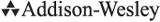

Third Edition
Robert Love

Upper Saddle River, NJ • Boston • Indianapolis • San FranciscoNew York • Toronto • Montreal • London • Munich • Paris • MadridCape Town • Sydney • Tokyo • Singapore • Mexico City